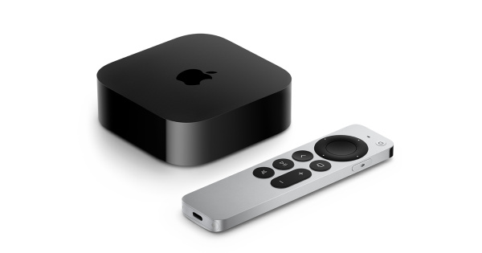

THIS IS APPLE TV WEBSITE

Apple TV is a digital media player and microconsole developed and marketed by Apple Inc. It is a small network appliance hardware that plays received media data such as video and audio to a television set or external display. Since its second generation model, it is an HDMI-compliant source device and can only be connected to an enhanced-definition or high-definition widescreen television through HDMI to function.
Apple TV lacks integrated controls and can only be controlled remotely, either through an Apple Remote, Siri Remote or some third party infrared remotes. Since the fourth generation model, Apple TV runs tvOS with multiple pre-installed software applications. Its media services include streaming media services, TV Everywhere-based services, local media sources, and sports journalism and broadcasts. At a March 2019 special event, Apple lessened attention on the Apple TV because of its lack of success. To generate additional revenue, they instead released Apple TV+ and Apple TV Channels a la carte.
With the fourth generation Apple TV and later, users can download apps and games from the tvOS App Store. This app store is similar to the one found on the Apple iPhone and iPad. Apps can now be ported from iOS easily by developers since tvOS and iOS share a common codebase and kernel. Examples include the Papa John's Pizza[61] and Grubhub apps which allows for users to order food right from Apple TV and Zillow which allows users to search for homes right on their TV.[62] A NASA app for Apple TV includes live streaming of NASA TV content, including International Space Station missions.[63] Games use the Accelerometer and Gyroscope along with the touchpad found on the Siri Remote for control. External Bluetooth game controllers can also be paired. Examples include Asphalt 8, which can be played using the Siri Remote.
On April 20, 2021, Apple announced an updated Apple TV 4K with the A12 Bionic chip, support for high frame rate HDR, HDMI 2.1, and Wi-Fi 6. Its HDMI port supports ARC and eARC, which allows other sources plugged into the television to output audio through Apple TV, including to AirPlay speakers like HomePod.[50] It also has the ability to pair with the ambient light sensor on iPhones with Face ID to optimize its color output, a feature that was also extended to older Apple TVs with tvOS 14.5.[51] AirPlay supports high frame rate HDR playback, allowing videos shot on the iPhone 12 Pro in Dolby Vision 4K 60fps to be mirrored in full resolution. Following the announcement, the previous Apple TV 4K with an A10X Fusion chip was discontinued.[52] The model also comes with a thicker redesigned Siri Remote with a circular touchpad with navigational buttons, as well as power and mute buttons. The remote does not include an accelerometer and gyroscope, which were present in the previous Siri Remote, making it incompatible with some games.[53] The remote is compatible with previous generation tvOS-based Apple TVs and ships with an updated SKU of the Apple TV HD.[54]